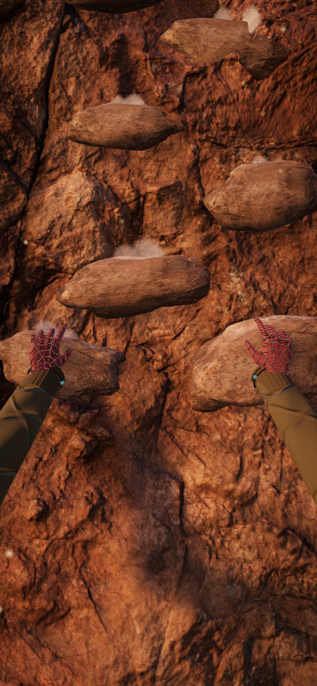
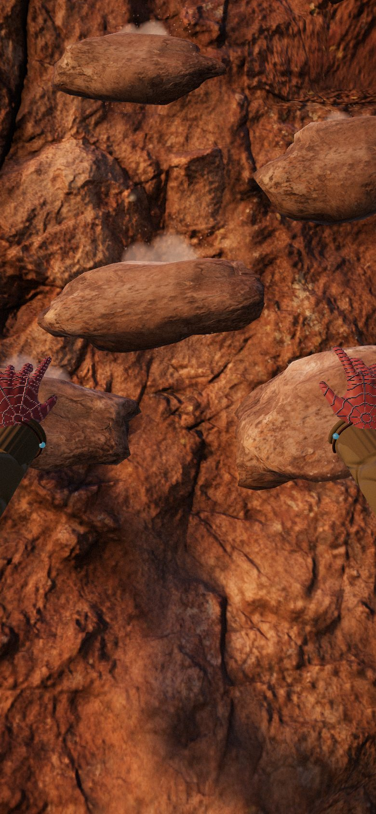
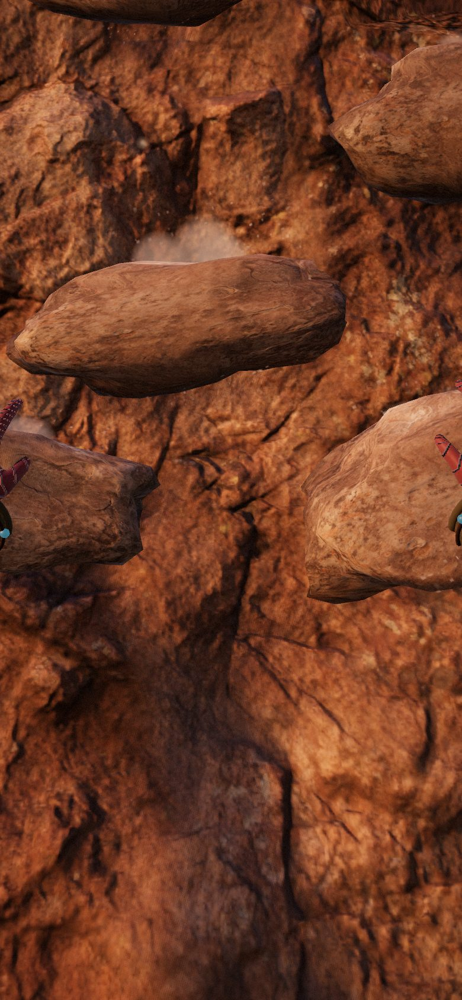
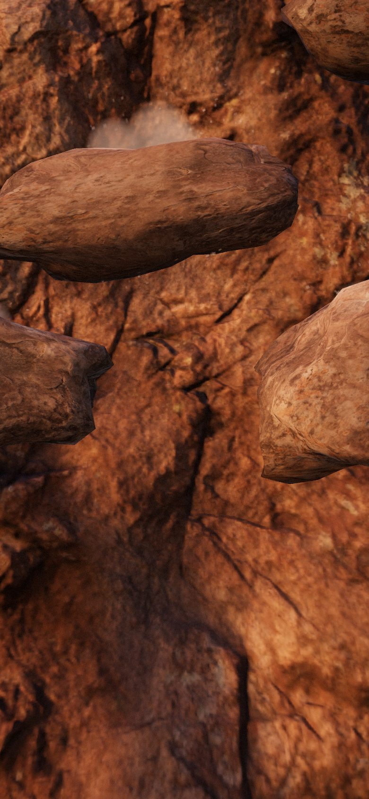

B44 — how close the hands sit to your eyes
The same frame, the same climb, the same instant — only the eye moves toward the wall. Both hands are wearing the glove.
The cause is a framing dolly in camera.js: the eye eases back, up to 0.60 m, so that both hands always fit the frame width. With the hands only 0.50 m apart it had already retreated 0.17 m.

Today
The hands read as someone else's, out at the end of long arms. This is what you were looking at when you said it was wrong.

1 · A step in
Just the dolly switched off — the eye never retreats to fit a wide reach. Everything else is exactly as it is now.

2 · The Climb
Your head is in over the rock, the way it is when you are actually on a wall. The hands are yours and the forearms come in from below.

3 · Right in it
Nose almost on the rock. Biggest hands, most weight — and the least wall, so reading the route ahead gets harder.